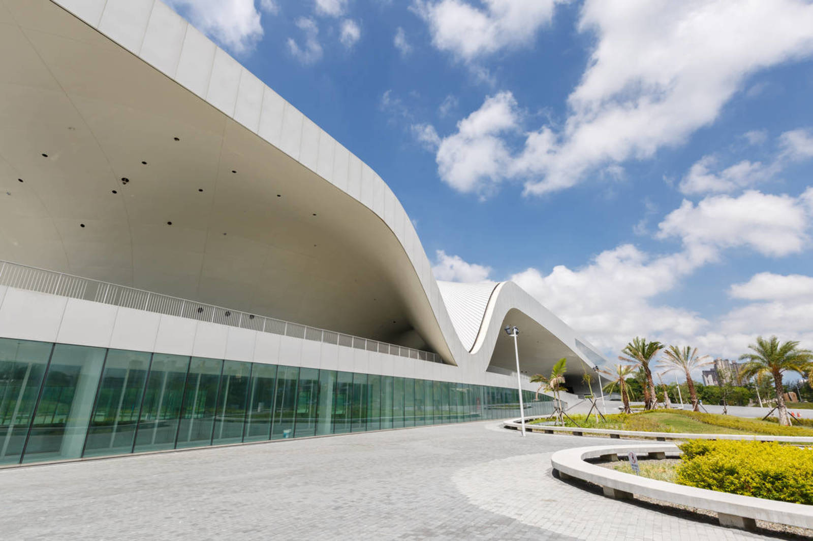
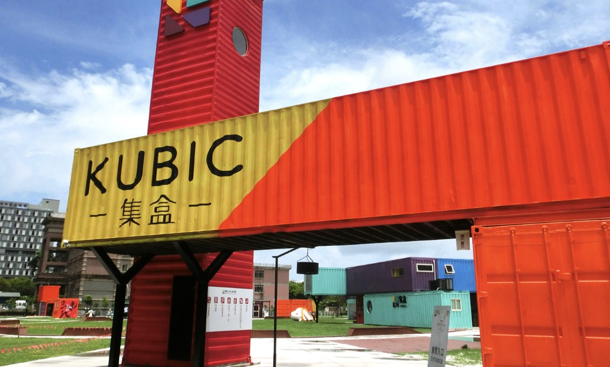
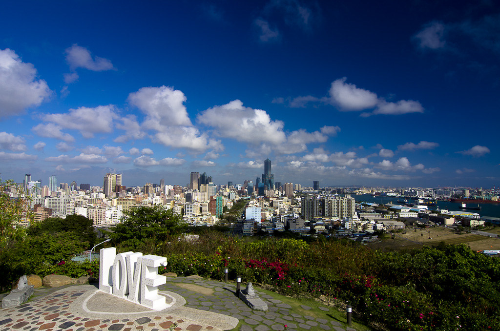

大魯閣草衙道
交通
地址：806高雄市前鎮區中安路1之1號 (捷運草衙站2號出口)
國道中山高速公路(中山高南下) > 國1 > 由中安路匝道出口 > 經中安路 > 右轉草衙道。
台88快速道路(由國道三號或大寮、萬丹、潮州) > 由小港/鳳山交流道出口 > 左轉鳳頂路 > 右轉中安路 > 右轉草衙道。
健省道台1縣(由大樹、大寮、九曲堂、萬丹、屏東市) > 行駛中山東路 > 左轉維武路 > 左轉鳳頂路 > 右轉中安路 > 右轉草衙道。
縣道183(由仁武、鳥松、鳳山) > 行駛鳳南路 > 右轉和成路 > 經明鳳三路 > 右轉中安路 > 右轉草衙道。
台17(南面由林園、東港、新園) > 行駛沿海路 > 左轉中山四路 > 右轉中安路 > 左轉草衙道。
台17(北面由鼓山、三民、前金、新興、苓雅、鹽埕、前鎮) > 行駛中山二/三/四路 > 經中山路車行地下道 > 左轉中安路 > 左轉草衙道。
旗津彩虹教堂
交通 【大眾交通運輸】
地址：高雄市旗津區旗津三路990號
1.高雄火車站前→搭乘2、36號公車→到前鎮站下車→轉35號公車→到海岸公園下車可抵。
2.高雄火車站前→搭248號公車→至鼓山輪渡站搭渡輪→轉35號公車→到海岸公園下車可抵。
交通 【自行開車】
中山高（國道1號）：下終點交流道→接漁港北路→左轉新生路→即有路標指示往過港隧道→抵達旗津後直行即可見到海岸公園指示。
棧貳庫
交通 【捷運】
地址：804高雄市鼓山區蓬萊路17號（七賢三路底）
橘線西子灣站2號出口→步行約3 分鐘→棧貳庫
交通 【輕軌】
駁二蓬萊站或哈瑪星站→步行約3 分鐘→棧貳庫
交通 【公車】
1 .高鐵新左營站搭西城快線客運 至哈瑪星旅運接駁中心→步行 約2分鐘→棧貳庫
2.高雄火車站搭248公車至哈瑪星 旅運接駁中心→步行約2分鐘→ 棧貳庫
交通 【開車】
國道1號下中正交流道→中正路接 五福路→左轉七賢三路→高雄港 牌樓→棧貳庫停車場
灰灰基地美術館
交通
地址：高雄市新興區民有街71號1Ｆ
捷運中央公園站(Ｒ9站)2號出口，步行約10分
營業時間：週五 10:00~18:00
週六 10:00~19:00．週日 10:00~19:00
田寮月世界
交通【自行開車】
地址：823高雄市田寮區月球路38號
國道3號-田寮交流道下-省道臺28線
交通【大眾運輸】
搭臺鐵至高雄站下-轉搭高雄客運(往旗山)至月世界站下。
大東藝術文化中心
交通
地址：高雄市鳳山區光遠路161號
高雄捷運橘線大東站【O13】 → 2號出口
衛武營國家藝術文化中心

交通【自行開車】
地址：83075高雄市鳳山區三多一路1號
1.南下：
經國道1號
國道1號高速公路中正交流道下→左轉往鳳山方向→直行中正一路→右轉國泰路二段進入慢車道→衛武營國家藝術文化中心。
經國道3號
國道3號高速公路轉國道10號高速公路→接國道1號高速公路→中正交流道下→左轉往鳳山方向→直行中正一路→右轉國泰路二段進入慢車道→衛武營國家藝術文化中心。
2.北上：
經國道1號
國道1號高速公路三多路交流道下→右轉往鳳山方向→直行三多一路→衛武營國家藝術文化中心
經國道3號
國道3號高速公路轉台88快速公路→接國道1號高速公路→三多路交流道下→右轉往鳳山方向→直行三多一路→衛武營國家藝術文化中心
交通【捷運】
橘線「衛武營站(O10)」下車，自6號出口，出口前右手邊即為場館位置。
交通【台鐵】
搭高鐵至「左營站」後轉搭捷運，轉搭方式請參閱「搭捷運」。
交通【公車】
可搭乘高雄市公車52、70至衛武營國家藝術文化中心站。
或搭乘50、53A/53B、88、248、橘7A/橘7B/橘8/橘10/橘11、紅21、8001、黃2A/ 黃2B/黃2C至建軍站。
KUBIC集盒

交通【捷運】
地址：高雄市前鎮區復興三路5號。(中華五路及復興三路口IKEA旁
捷運紅線「獅甲站」4號出口約走7分鐘。旁邊規劃有停車場
交通【輕軌】
輕軌捷運「軟體園區站」走約4分鐘。
高雄忠烈祠

交通【大眾運輸】
地址：高雄市鼓山區忠義路30號
每週二至週日行駛，搭乘56路公車（高雄火車站至壽山動物園）在情人觀景台站下車即可到達高雄市忠烈祠。
56路公車預定到站（情人觀景台）時刻，為每週二至週五早上09：04至傍晚18：04，每1小時約有1至2班次；
例假日為早上09：04至傍晚18：04，每1小時約有2至3班次，
詳情請洽高雄市公車語音查詢專線（07）7497100代碼56。
交通【自行開車】
中山高(國道1號)→接國道10號→往左營走到底→順著路標下翠華路→再接九如四路→遇銘傳路右轉→接鼓山三路可抵。